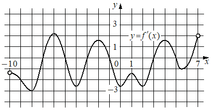

Авторский разбор и аудит предварительны; внешней экспертизы нет.
Модель автора: claude-opus-5-5 (opus; effort=low); в основных частотах: True ·
Впишите правильный ответ.
На рисунке изображён график производной функции определённой на интервале Найдите количество точек минимума функции принадлежащих отрезку

КЭС: 4.2 Применение производной к исследованию функций на монотонность и экстремумы. Нахождение наибольшего и наименьшего значения функции на отрезке
1
| ID / вход | Действие | Результат | Локальные KC |
|---|---|---|---|
| s1 · condition | По графику производной найти на отрезке [-2; 6] точки, где f'(x) обращается в ноль со сменой знака, и определить направление смены знака | На [-2; 6] f' меняет знак с «−» на «+» в одной точке (около x≈2,5); смена с «+» на «−» около x≈5 — точка максимума; ближайшие смены знака слева (около x≈−3) и справа (около x≈6,3) лежат вне отрезка; касание без смены знака около x=1 отсутствует (f'<0) | kc1 |
| s2 · s1 | Классифицировать найденные нули производной как точки минимума (смена знака с «−» на «+») и подсчитать их на отрезке | 1 точка минимума | kc2 |
[
{
"id": "m1",
"name": "Поиск точек минимума по знакам производной на графике f'",
"step_ids": [
"s1",
"s2"
]
}
]Вход: график y=f'(x) и промежуток; операция: найти точки пересечения графика с осью абсцисс и знак f' по обе стороны от каждой, отбрасывая точки вне промежутка и нули без смены знака
{
"local_kc_id": "kc1",
"status": "needs_split",
"catalog_kc_id": null,
"evidence": [
{
"ref": "step:s1:action",
"quote": "найти на отрезке [-2; 6] точки, где f'(x) обращается в ноль со сменой знака, и определить направление смены знака"
},
{
"ref": "step:s1:result",
"quote": "ближайшие смены знака слева (около x≈−3) и справа (около x≈6,3) лежат вне отрезка"
},
{
"ref": "image:assets/919ded8c0bdd210e0e49d0a4.png",
"region_description": "Кривая y=f'(x) на сетке от x=-10 до x=7: пересечения оси абсцисс около x≈-0,3 (сверху вниз), x≈2,5–3 (снизу вверх), x≈5,2 (сверху вниз), x≈6,3 (снизу вверх); локальный максимум ниже оси около x=1"
}
],
"context_refs": [
"condition",
"image:assets/919ded8c0bdd210e0e49d0a4.png"
],
"alternatives_checked": [
{
"catalog_kc_id": "literal_9aee0783618d",
"reason": "Покрывает чтение знака f' по графику и направление смены знака в нулях, но не отбор по отрезку"
},
{
"catalog_kc_id": "literal_6ad8f502588e",
"reason": "Покрывает проверку принадлежности кандидатов промежутку, но не чтение графика"
},
{
"catalog_kc_id": "stationary_point",
"reason": "Предполагает решение f'=0 аналитически по формуле, а не чтение графика"
}
],
"rationale": "Кандидат объединяет два действия: чтение нулей и знаков производной по графику и отбор точек по отрезку [-2; 6]. Оба есть в каталоге отдельными узлами; match к одному узкому KC неверен.",
"proposal": {
"parts": [
{
"part": "Считать по графику f' нули и направление смены знака",
"possible_catalog_kc_id": "literal_9aee0783618d"
},
{
"part": "Отобрать найденные точки, принадлежащие отрезку [-2; 6]",
"possible_catalog_kc_id": "literal_6ad8f502588e"
}
]
},
"blocking": false,
"issue_ids": [
"i1"
]
}Вход: точки смены знака f'; операция: смена «−» на «+» — минимум, «+» на «−» — максимум; применимо к функции, дифференцируемой на интервале
{
"local_kc_id": "kc2",
"status": "match",
"catalog_kc_id": "local_extreme_sign",
"evidence": [
{
"ref": "step:s2:action",
"quote": "Классифицировать найденные нули производной как точки минимума (смена знака с «−» на «+»)"
}
],
"context_refs": [
"step:s1:result"
],
"alternatives_checked": [
{
"catalog_kc_id": "derivative_monotonicity",
"reason": "Вывод о монотонности на промежутках, а не о типе экстремума в точке"
},
{
"catalog_kc_id": "global_interval_extreme",
"reason": "Глобальный экстремум на отрезке, а вопрос о локальных минимумах"
}
],
"rationale": "Операция — определение типа локального экстремума по направлению смены знака f' (−→+ минимум), что целиком соответствует определению local_extreme_sign. Подсчёт на отрезке опирается на отбор из s1.",
"proposal": null,
"blocking": false,
"issue_ids": []
}[ "Абсциссы нулей производной считаны с рисунка приблизительно; ноль около x≈6,3 считан как лежащий правее 6" ]
[
{
"id": "i1",
"kind": "coverage",
"refs": [
"step:s1:result",
"image:assets/919ded8c0bdd210e0e49d0a4.png"
],
"description": "В s1 не упомянут ноль производной со сменой «+» на «−» около x≈-0,3, лежащий в [-2; 6] (точка максимума). На ответ (1 минимум около x≈2,5–3) не влияет; абсциссы считаны приблизительно.",
"blocking": false,
"affected_local_kc_ids": [
"kc1"
]
}
]{
"author_path": "data/annotation/runs/2026-11-07-fipi-team-bogdan108-051-150/raw/author/396DA0.json",
"auditor_path": "data/annotation/runs/2026-11-07-fipi-team-bogdan108-051-150/raw/auditor/396DA0.json",
"accepted_after_review": null
}